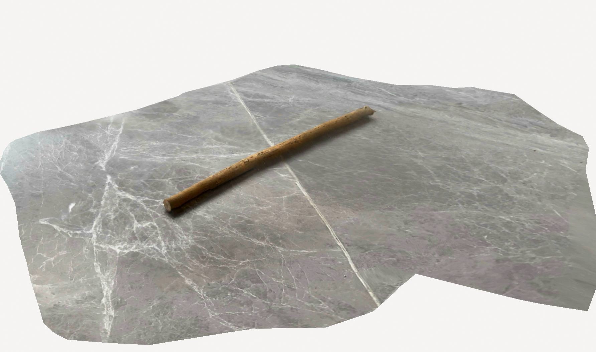
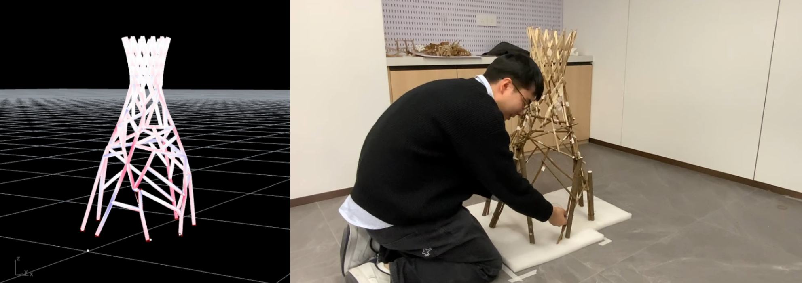
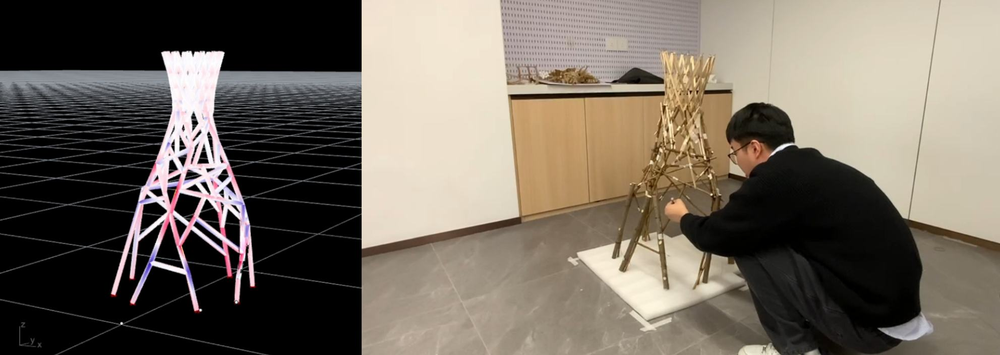
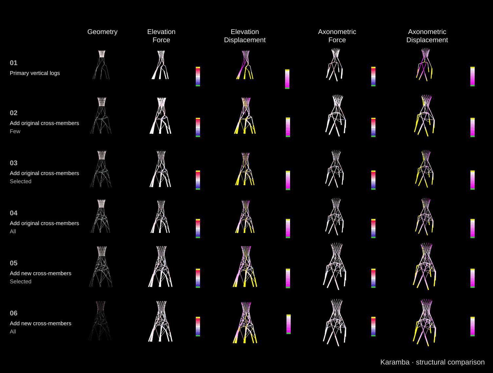

01From an irregular piece of timber to useful feedback.
I designed the real-time calculation workflow so the digital model follows the structure being assembled.

Capture the material
Length, curvature and diameter
Track the assembly
Motion-capture keypoints reconstruct its position
Read the structural response
Karamba feedback informs the next adjustment
↶ Adjust the physical assembly and repeat
02Keep the physical and digital views side by side.
Both records show the computed geometry on the left and the 1:10 physical model on the right. Reading them together makes the feedback loop visible.


03Make the next adjustment easier to judge.
The matrix keeps six alternatives visible together. It connects changes in the assembly with the patterns in the analysis, rather than asking the viewer to interpret a single isolated result.
One configuration, seen through geometry, force and displacement.
Six configurations, with different cross-members added.

Read each view’s legend separately to compare force and displacement across the six configurations. Swipe to see all five views.
04Extend the question to people sharing a space.
A separate lighting study proposes responses to occupancy, relative position and orientation. These six scenarios explore social interaction alongside the material study.
Proposed lighting rules · a secondary exploration alongside the structural feedback study.